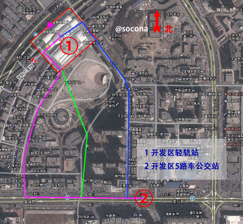

目录
大家被录取之后在网上可以查到自己的电子档录取通知书。但是大工真正的入学通知书寄到的时间一般比较晚，亲们请耐心等待，迪迪当时也是快开学才收到的。伴随通知书到来的还有一张建行卡，这是交学费用的，具体事宜通知书里面会写的很详细。电话卡就自己看了，可用可不用，入学时学校里就可以办，一样方便。
报到时间请见入学通知书。一般在通知书上规定的时间前三天，宿舍就可以安排入住了。如果来的更早，新生宿舍不能安排入住，也可以联系贴吧或者班导生帮你安排暂住。
如果你错过了校车怎么办？请看“抵软交通方式”。
大连有机场，火车站和码头。大连理工大学在报到的时间里会安排校车在火车站和码头接送新生。
下面是大连市区地图。
大连火车站位于市中心图中1的位置，是铁路和公路的枢纽。
从大连火车站抵达软件学院有如下几种方式：
校车（5:30 – 22:00，限规定报到时期，免费，1个小时）
在规定报到的那几天，软件学院会安排校车在火车站安排免费接送新生。校车在宿舍区下车，可以省不少的力气搬行李。 注意：软件学院与其它学院不在一个校区，请一定坐开往软件学院的校车。
“大连火车站 - 大连大学”公共汽车（6:00 – 19:30，7元，行李另算，1.5个小时）
车站在火车站后身（北门附近）。从前门（南门）出火车站需要右拐，过宏孚桥后左拐直走；从后门（北门）出火车站后左拐直走，在永和豆浆门前。 上车后，告诉售票员在“软件学院”下车，每人7元（2012.6），行李每件2元。最后一班车可能涨价。本车在软件学院生活区门口停车。
大连轻轨+ 开发区5路公交车（6:00 – 20:00，4元+1元，行李另算，2个小时）
本方案比较复杂。
如果你带有大宗行李，严重不推荐。如果你没有带行李则推荐此路线，较快。 首先，需要到轻轨站购票，本站站名为“大连火车站”，购开往“开发区站”的票一张，4元。行李看人品，理论上每件2元。 抵达开发区轻轨站后，向南走，出五彩城即是开发区公交5路车站，详见下图。乘坐开往大连大学方向的5路公交车，在“职业中专”车站下车。下车即是软件学院生活区。
出租车（1个小时）
大连市出租车计费标准为起步3公里8元，计里程同时计时。超过3公里每公里2元，低速行驶或者等待前5分钟免费，超过5分钟每分钟0.3元。 可以与出租车商定价格不按正常计费。通常在100元左右。比打表走多费钱。
或有其它方案，不比上述方案方便，此处暂略去不表。
软件学院大一是不允许带电脑的，不过到了下学期就会邮寄保证书到家里，想带的同学让家长写了就行（不过这是官方）。 理论上，大一学专业课学C和C++，带电脑确实方便。实际上，带电脑的同学真正用来编程很少，多数同学是用来玩游戏或者看视频或者进行其它娱乐活动。另外，这个年代电脑的更新换代是很快的大家都知道，倒不如以后再带还能花同样的钱买到更高配置的。 上网可以去大连大学那边，或是在C区二楼的机房（用学生卡[要充值]或机票合1元/时）
到底要带什么呢？用一句话来说就是：尽量少带东西，这里什么都有。
特别提醒：新生刚入校时，会有人向大家推销报纸、学习用品、日用品等，千万别买哦，这些东西都比平时价格高了很多很多。其中尤以英语报纸为甚，二十多块钱的东西卖到一百，而且绝大多数人以后是不会看的。
下面这些，是入学后可能需要的物品，基本上到学校再买就可以了。
【盆子】一般来说，一个正常或者偏小点的盆用来洗脸，一个大盆用来洗衣服，其实我还买了大桶桶来泡衣服，洗脚盆根据自身情况而定、我就见过许多人不洗脚的ToT（不过苹果建议晚上睡觉前用热水泡脚对身体还是很有益的 么么哒）
【毛巾】一条擦脸毛巾，头发长的女生记得备一条吸水强的毛巾用来擦头发，有泡脚习惯的再准备一条擦脚巾，最好再备一条抹布，桌子如果不擦的话时间长了会落灰的
【牙刷】专家建议每三个月更换一次牙刷，所以每学期要至少更换一次（苹果提醒：牙刷毛太硬对牙龈不好、我一般都挑软的）
【牙膏、洗发液、护发素、沐浴露或者肥皂、搓澡巾必备】建议买瓶装，经济实惠。（PS:用护发素和不用护发素头发真的不一样！）
【洗面奶】脸上有油和脸上没油真的很不一样
【各种润肤乳防晒霜、化妆品blabla】苹果说欢迎女女补充，但是木有女女补充这条。
【暖水瓶】必备一个这个就不用说了吧、报道之后在学校超市买就行、本部每个宿舍楼一楼都有打开水的地方、很方便。软件学院每个宿舍楼1、3、5层可打开水。
【水杯】这个不用多说了吧想用什么的就用什么的，苹果是自习一个、寝室一个 PS：自习室都有打开水的地方（110注：软院这点相同）
【肥皂及肥皂盒】用来洗衣服。但是说实在的还是洗衣液比较好，洗衣粉和肥皂太伤衣服，洗衣液虽然价格比较贵但是是浓缩的每次不需要太多。白的衣服还是用增白皂洗比较舒服。
【洗衣板】这是个好东西啊好东西。
对于本部（by苹果）：喜欢洗衣服的童鞋可以用到，不过每个宿舍楼里都有洗衣房，带着一桶衣服和三块五毛钱找楼下大爷大妈即可，类似床单被罩大衣之类的不好洗的不好干的可以拿去洗，内衣最好还是手洗吧！不过洗衣房洗的不是特别干净，可以提前拿洗衣粉泡一天，要不然衣领就得拿回来自己搓了。
对于软院（by110）：软院的洗衣房在四舍入口对门，一开始在洗衣房挺方便的，大二寝室一起买个洗衣机也不错。
【拖鞋】必备啊必备，寝室要穿，出去洗澡也要穿，棉拖鞋可有可不有，因为寝室冬天暖气还能凑合。
【蚊香与蚊帐】 蚊香有的人比较讨厌那味道，所以慎重一点选择，推荐用six god 也就是六神花露水了，比较给力。蚊帐不用自己买、学校会发的。
【草席】这个说不说其实都没用，南方的同学自然会用，北方的有些不习惯的还是不要买了，会不适应的。大连夏天真不热！
【被子】这个可以不用带、学校发的有、一床夏凉被、一床冬天的厚被子、、、其实我现在盖的是厚的没换= =
【床帘】需要让寝室更漂亮的可以买个然后换了。
【睡衣等各种衣服】我会告诉你我不说这些么？
【热水袋】没必要，暖气足矣。
【台灯】必备的！寝室每晚22:45断电（软院大约在22:37），所以买那种LED充电台灯，玖量的不错。
【药箱】自愿，本部买药还算比较方便的，出了西便门就是。（在软院带这个还是有必要的 by110）
【碗筷勺】这个主要是如果你喜欢自己煮东西吃，或者是冲泡藕粉啊芝麻糊之类的，或者是把食物带回来的时候会有用处。
【洗洁精】和上面的那个配套使用。
【针线包】简单的缝缝补补，女孩子如果需要的话。
【镜子】虽然厕所里有个，但是如果你化妆或者抹护肤品之类的，鬼才去隔个大水池很不舒服的去照镜子。PS：我才不会提醒带梳子之类的白痴问题。
【衣架】挂衣服。还有那种圆盘的带小夹子的，寝室里有挂的地方、晾袜子啊内衣什么的。
【粘钩】苹果曰过，粘钩是个好东西。想在哪里挂东西什么的一粘就好了，尤其是小衣柜里面，各种实用、挂包挂衣服很方便我会乱说么？
【吹风机】（110注：其实这个算违禁电器）如果头发湿怎么办？对，吹风机、你没有听错！就是吹风机！建议买1000W的就行，大了容易断电，小了风力不够（苹果又曰过：头发吹多了不好哦亲~）。
【闹钟】这个其实不是很需要，因为手机自带闹钟的事我会乱说？不过可以买个小钟放桌子上提醒时间。
【指甲钳】不解释。
【剪刀水果刀胶水胶带双面胶】总有派上用场的那一天……。
【插排】 电子产品这么多能不有一个么？（买个质量好的把，比如公牛 by 110）
【锁】 用来锁柜子，两个，一个衣柜 一个矮柜子。
【绳子】 这个可以有，不少人在寝室拉起一条晾衣绳晾衣服，不过新生一开始管的严 so 。
【雨伞太阳伞】下雨打雨伞，太阳大就是太阳伞啦。
【眼药水】玩电脑手机以及认真学习的孩子们，这个必须带，眼睛多重要，是不是！（软院的孩子，更是这样 by 110）
【相机】我觉得这个可以带，手机的像素还是很低的，开学之后那么多的活动啊，不照下来多可惜。
【扇子】推荐折叠的那种塑料扇子，轻巧方便，热了就翻出来扇扇，不用就放进包包。
【钱包】当然不是让你们别忘记带钱，只是开学后有很多卡，带个可以装卡的钱包，省事不少诶（装卡。。。）
【便利贴】超喜欢各种小本本的我，觉得便利贴真的是伟大的发明，不要买那种小条条的，好看不实用，买那种大一点的 很实用。
【保鲜袋】超市里买一卷，既可以当袋子也可以当保鲜膜，吃不了的什么东西放到袋子里，或者丢垃圾用。
【垃圾桶】这个和盆一起买就行吧，丢垃圾方便点，还可以顺带着买点垃圾袋。
【木糖醇】买一大盒放在寝室，既是零食又可以清新口气（我看见电脑边上的它想起来的）。
【特产】传说中有一种东西能迅速拉近室友之间的距离，它就是特产。小黄（@bmliu）告诉我咱辽阳特产老世泰（不是广告啊，他没给我钱……），我们还可以买得到诶。至于还有啥特产，百度去，它啥都知道。
这部分由 @戴墨镜的苹果（苹果是帅哥哦～）的帖子（http://tieba.baidu.com/p/1146023595）整理而来。 这部分软院和本部是通用的，苹果写得很详细，此处仅作整理和少量补充，再次感谢苹果。
为了让大家更好的了解软件学院，奉上迪迪传送门。
by @腊肉般的发型 （即 @惟风一处 @惟疯一处 @Debug肉）& @shooee 原贴地址：http://tieba.baidu.com/p/1120692331 和 http://tieba.baidu.com/f?kz=245876046
软院在开发区中的大体位置(07年从Google Earth上截的图，求更新，by ＠shooee)：
软件学院区域划分图：
- 生活区part1（１-5舍）。2012级情况：1舍：大一到大四女寝，2舍：大四&少数大三男寝，３舍：大二男寝，4舍：大三男寝 5舍：大一新生男寝
- 大连理工大学第六食堂（１-３层）&大学生活动中心（４层）
- 生活区part2（6舍研究生寝）
- 教学楼A：辅导员办公室 & 教务处 & 上课教室 & 自习室 & 上机地点
- 教学楼B：上课教室 & 自习室
- 教学楼C：创新实践中心 & 上机地点 & 上课地点（圆弧区） & 嵌入式实验室 ＆ 网络实验室 ＆ 其他诸多实验室
- 图书馆 & 书韵广场 & 机房 & 信息楼（空）
- 综合楼：老师办公室 & 部分教室
- 体育馆
- 双子湖（其实一个叫涌泉湖，一个叫思源湖）
- 大连理工大学软件学院正门（基本不开）
- 大连理工大学软件学院生活区门，这个门是在十年院庆、学校改造的时候开的，现已建完。PS：强烈怀疑这是为了增加食堂客流量改建的。
- 体育场
这里要说一下，我们的训练强度也不是很小的，大连的太阳很厉害，爱美的孩纸记得准备好防晒霜，身体虚弱的同学要量力而行。
切记：千万不可勉强自己，自己的健康是最重要的，如果不行一定要如实告知教官。
不过军训是一段很美好的回忆，和同学们会在军训中逐渐建立起友谊。这里独家奉上一段正步视频，希望大家不要嘲笑啊~不是护旗方队的我们已经走得很认真了。 http://v.youku.com/v_show/id_XMzQxNDg5NTk2.html
照片：
软件工程（大家貌似喜欢加上英强）、网络工程（大二才会和软件工程分开）的孩子们军训过后会有英语的分级考试。分级考试结束会有大约30人进入“英语二级班”，此处仅罗列二级班部分优缺点，诸君自己斟酌。但是假期不要荒废你们的英语哦，准备下考试也是有好处的。
二级班的优点：英文授课（11级的C语言，工科数学分析基础 均为英文授课），英语课程提前完成（提前完成，所以大二下学期会很轻松）。
二级班的缺点：不与同班同学一起上课（至少第一年是这样，课表是乱的），结果可能与同班同学感情不是那么深厚，大学与中学不同，大家在一起的时间，真的不多，所以在一起的时间是很珍贵的。
软件工程（日语强化）的孩子们入学没有英语分级考试，因为课程鸭梨，你们根本不学英语，不过军训时就开始上日语的基础课程了，注意大课好好听讲，打好根基，建议假期背背日语五十音图。（吐槽：日强的其实很辛苦的。）
日强的经过短暂学习后可以根据实际学习和兴趣情况自愿申请转到软件工程专业。
住宿嘛，上床下桌，独立卫生间和独立盥洗室（大妈每个月会帮助每个寝室彻底清洗，本部的孩子们享受不到哦~）
1舍楼底下是澡堂。学校澡堂周二、周六不开放。 开放日开放时间：16：30-20：00 ，费用：0.02元/15秒。 不过也可以坐车去教师楼或是开发区的浴池。生活区3舍楼下有一个建行ATM（楼门口处），一个邮政的ATM（超市对面），一个邮局（里面也有联通营业厅，也在超市对面），一个移动营业厅，一个超市（“黎明苑超市”），一个眼镜店，一个理发店（手艺剪过头发的各有说法,也可以考虑去大连大学那边理发），一个教材中心（可以复印打印，也有许多书和材料）。2舍楼下有个小复印部，扫面什么的都行，还可以彩印。4舍入口处对门是洗衣房。2、4、5舍内均有自动贩卖机很方便。大连冬天风大，不冷不过我觉得挺潮湿的，建议准备一些抗风的衣服，最好能紧身点，不然那种潮湿的冷不好办。春秋天气还不错。夏天风小，不是很热。但气候多变，建议多准备些衣服，以防万一。
注：未成年人以及成年人请在家长陪同下观看。 by 毕业生学长 @realsu
舌尖上的软院 —— http://tieba.baidu.com/p/1670561598
我们出行一般是**五路车**（五路车，灰一般的感觉，你懂得。当然还有到火车站的小客），但是别办公交IC卡，不便宜不说，还不给退押金。 软院这边确实比较偏僻，但是周边可以满足你的各种需要。这就不得不说到大连大学，我们与大连大学离得很近，5路车仅仅需要一站地（步行大约20分钟）。由于我院没有游泳池，喜欢游泳的孩子可以去大连大学办游泳卡还，很方便的。大连大学对面就是光伸商城，里面东西也比较全，最底层还有很多吃的（强烈推荐光申底层的鸡公煲，我没收广告费）。不过真的想好好玩或者采购的话就反方向做5路车去开发区中心安盛那边咯。
推荐各位看拉姐的 大黑山攻略 by @左右啦 http://tieba.baidu.com/p/910015418